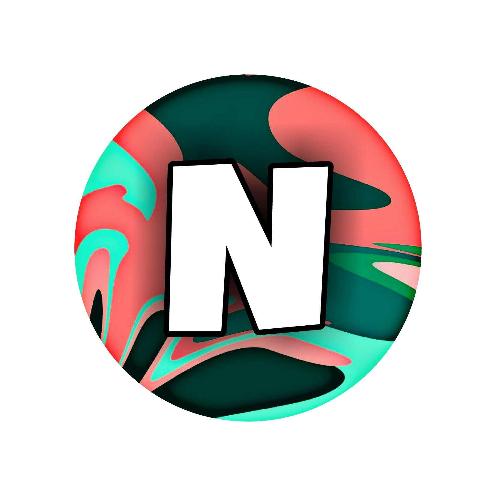

La NeyCorp est une structure qui depuis le début de l'année, organise des tournois sur le jeu Rocket League.
Elle a ensuite décidé de proposer ses services à des structures eSport, des indépendants, etc.... pour organiser leur propre tournoi Rocket League pour ceux n'ayant pas l'expérience, le temps nécessaire pour s'en occuper.
La NeyTeam est une filière de la NeyCorp ayant pour but de monter plusieurs équipes sur un même jeu, pour le moment sur Rocket League !
Ces dernières nous permettront de nous représenter à nos futurs tournois, elles sont encadrées par des coachs et managers afin que nos joueurs puissent évoluer dans de bonnes conditions.
La NeyCorp va bien évidemment continuer d'organiser des tournois Rocket League, toutes les deux semaines ! Mais nous ne souhaitons pas nous arrêter en si bon chemin :
Comme toutes activités, nous avons eu des hauts, comme des bas, mais comme énoncé précédemment nous avons réellement lancé notre activité en début d'année ce qui montre notre persévérance, notre motivation à vouloir aller de l'avant.